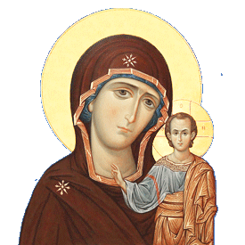

Photo Gallery
Twenty years of feasts, baptisms, weddings, pilgrimages and ordinary days in the life of our church and skete.
Loading the albums…

Russian Orthodox Church and Skete of the Resurrection of Christ
Fridley (Minneapolis), Minnesota
Twenty years of feasts, baptisms, weddings, pilgrimages and ordinary days in the life of our church and skete.
Loading the albums…